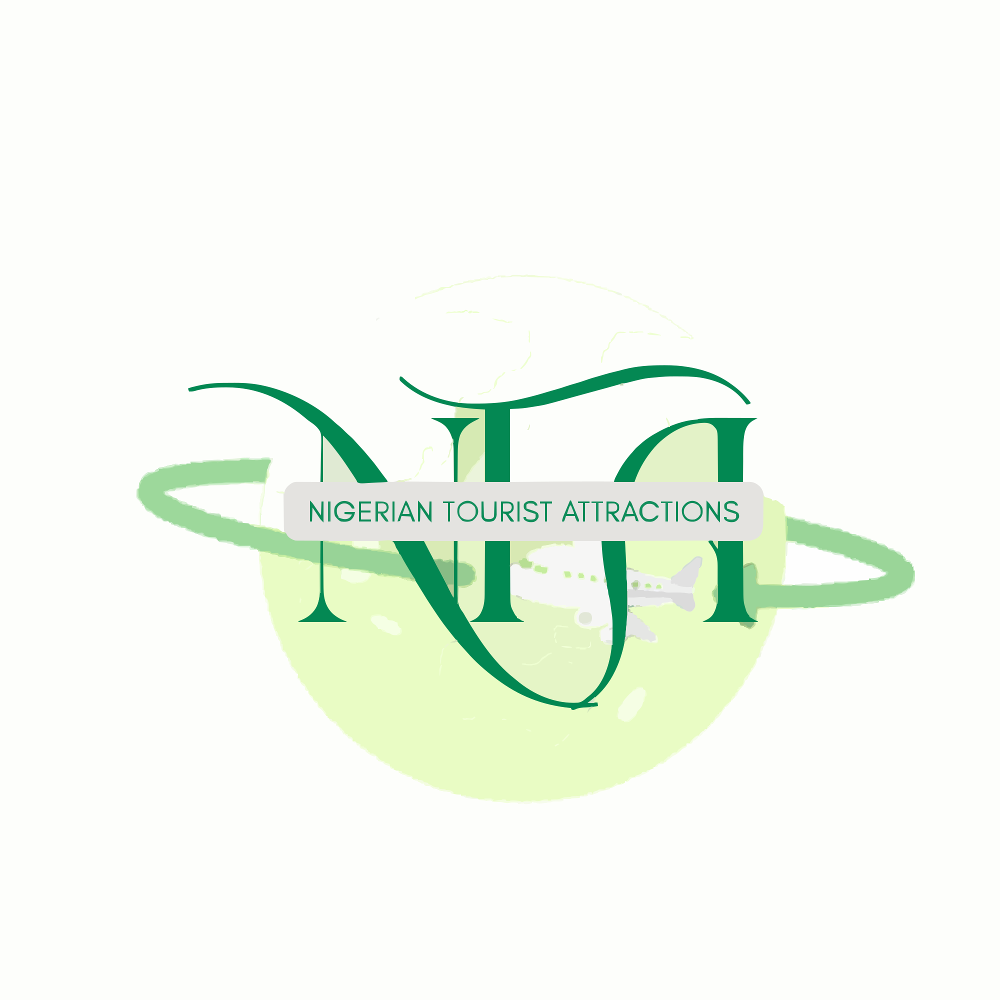
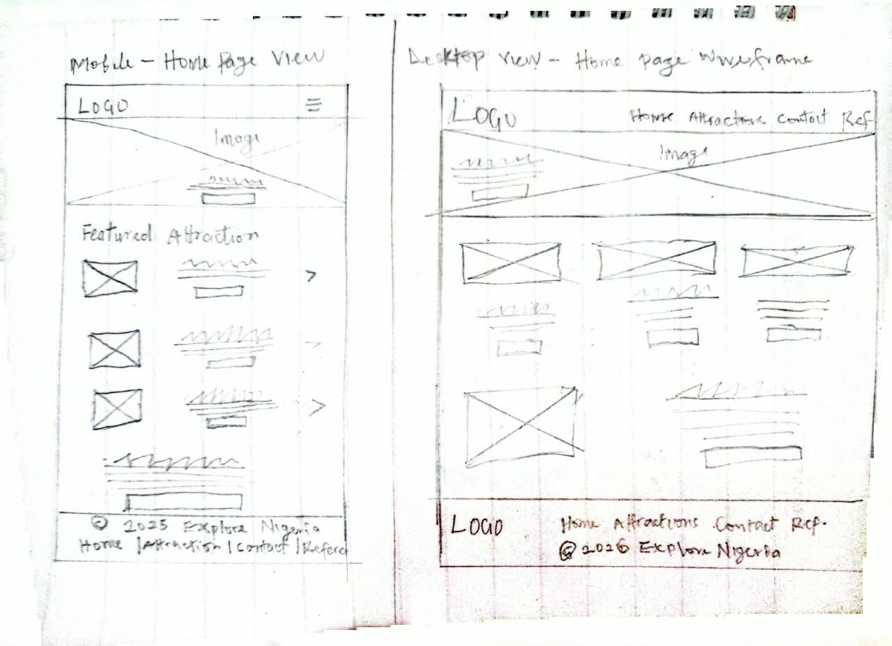

Site Name
Explore Nigeria

The name "Explore Nigeria" was chosen for a website about Nigerian tourist attractions. It is simple, memorable, and encourages visitors to discover the beautiful natural, historical, and cultural attractions found across Nigeria.
Site Purpose
The purpose of Explore Nigeria is to showcase some of Nigeria's popular tourist attractions, including their names, locations, types, descriptions, and images. The website will organize attractions into categories such as mountains, waterfalls, parks, historical sites, and cultural attractions. Visitors will also be able to use interactive category filters to find attractions that interest them.
Scenarios
- What tourist attractions can I visit in Nigeria, and where are they located?
- Which Nigerian tourist attractions are waterfalls, mountains, parks, or historical sites?
Color Schema
The color scheme for the Explore Nigeria website is designed to create a clean, natural, and user-friendly experience. The colors will also support the Nigerian tourism theme.
- #008751 - Green: Used for the header, navigation, headings, buttons, links, and important accents.
- #FFFFFF - White: Used for the main page background and attraction cards.
- #222222 - Dark: Used for body text and other important dark text.
- #E8F5E9 - Light Green: Used for selected sections, backgrounds, hover effects, and subtle highlights.
Typography
The Explore Nigeria website will use two fonts to create a clear and readable visual experience.
Montserrat
Montserrat will be used for headings, navigation, and important buttons.
- H1 headings
- H2 headings
- H3 headings
- Navigation links
- Important buttons
Roboto
Roboto will be used for general website content and body text.
- Paragraphs
- Attraction descriptions
- Location information
- Form labels
- General content
Wireframes
The wireframes show the planned layout of the Explore Nigeria home page on mobile and desktop screens. They illustrate the arrangement of the navigation, hero section, featured attractions, additional content, and footer.

Mobile
The mobile wireframe shows a single-column layout with a compact navigation menu and vertically stacked content for smaller screens.
Desktop/Wider Screen
The desktop wireframe shows a wider layout with horizontal navigation, a larger hero section, and multiple attraction cards displayed in rows.